2024年北京市中考数学试题 原卷解析
2024年北京市初中学业水平考试
数学试卷
考生须知：
1.本试卷共6页，共两部分.三道大题，28道小题。满分100分。考试时间120分钟。
2.在试卷和草稿纸上准确填写姓名、准考证号、考场号和座位号。
3.试题答案一律填涂或书写在答题卡上，在试卷上作答无效。
4.在答题卡上.选择题、作图题用2B铅笔作答，其他试题用黑色字迹签字笔作答。
5.考试结束，将本试卷、答题卡和草稿纸一并交回。
第一部分 选择题
一、选择题（共16分，每题2分）
第1-8题均有四个选项，符合题意的选项只有一个
1. 下列图形中，既是轴对称图形又是中心对称图形的是（ ）
A.  B.
B.  C.
C.  D.
D. 
【答案】B
【解析】
【分析】本题考查了中心对称图形与轴对称图形，根据轴对称图形和中心对称图形的定义进行逐一判断即可，如果一个平面图形沿一条直线折叠，直线两旁的部分能够互相重合，这个图形就叫做轴对称图形；把一个图形绕着某一个点旋转 ，如果旋转后的图形能够与原来的图形重合，那么这个图形叫做中心对称图形，这个点就是它的对称中心．掌握中心对称图形与轴对称图形的判断是解题的关键．
，如果旋转后的图形能够与原来的图形重合，那么这个图形叫做中心对称图形，这个点就是它的对称中心．掌握中心对称图形与轴对称图形的判断是解题的关键．
【详解】解：A、是中心对称图形，但不是轴对称图形，故不符合题意；
B、既是轴对称图形，也是中心对称图形，故符合题意；
C、不是轴对称图形，也不是中心对称图形，故不符合题意；
D、是轴对称图形，但不是中心对称图形，故不符合题意；
故选：B．
2. 如图，直线 和
和 相交于点
相交于点 ，
， ，若
，若 ，则
，则 的大小为（ ）
的大小为（ ）

A.  B.
B.  C.
C.  D.
D. 
【答案】B
【解析】
【分析】本题考查了垂直的定义，平角的定义，熟练掌握知识点，是解题的关键．
根据得到 ，再由平角
，再由平角 即可求解．
即可求解．
【详解】解：∵，
∴，
∵ ，，
，，
∴ ，
，
故选：B．
3. 实数 ，
， 在数轴上的对应点的位置如图所示，下列结论中正确的是（ ）
在数轴上的对应点的位置如图所示，下列结论中正确的是（ ）

A.  B.
B.  C.
C.  D.
D. 
【答案】C
【解析】
【分析】本题考查了是实数与数轴，绝对值的意义，实数的运算，熟练掌握知识点是解题的关键．
由数轴可得 ，
， ，根据绝对值的意义，实数的加法和乘法法则分别对选项进行即可．
，根据绝对值的意义，实数的加法和乘法法则分别对选项进行即可．
【详解】解：A、由数轴可知，故本选项不符合题意；
B、由数轴可知，由绝对值的意义知 ，故本选项不符合题意；
，故本选项不符合题意；
C、由数轴可知，而，则 ，故，故本选项符合题意；
，故，故本选项符合题意；
D、由数轴可知，而，因此 ，故本选项不符合题意．
，故本选项不符合题意．
故选：C．
4. 若关于 的一元二次方程
的一元二次方程 有两个相等的实数根，则实数
有两个相等的实数根，则实数 的值为（ ）
的值为（ ）
A.  B.
B.  C. 4D. 16
C. 4D. 16
【答案】C
【解析】
【分析】根据方程的根的判别式 即可．
即可．
本题考查了根的判别式，熟练掌握根的判别式是解题的关键．
【详解】∵方程， ，
，
∴，
∴ ，
，
解得 ．
．
故选C．
5. 不透明的袋子中装有一个红色小球和一个白色小球，除颜色外两个小球无其他差别．从中随机取出一个小球后，放回并摇匀，再从中随机取出一个小球，则两次都取到白色小球的概率为（ ）
A.  B.
B.  C.
C.  D.
D. 
【答案】D
【解析】
【分析】本题考查了画树状图或列表法求概率，依据题意先用列表法或画树状图法分析所有等可能的出现结果，然后根据概率公式求出该事件的概率即可．
【详解】解：画树状图如下：

共有4种等可能的结果，其中两次都取到白色小球的结果有1种，
 两次都取到白色小球的概率为．
两次都取到白色小球的概率为．
故选：D．
6. 为助力数字经济发展，北京积极推进多个公共算力中心的建设.北京数字经济算力中心日前已部署上架和调试的设备的算力为
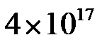
Flops（Flops是计算机系统算力的一种度量单位），整体投产后，累计实现的算力将是日前已部署上架和调试的设备的算力的5倍，达到 Flops，则的值为（ ）
Flops，则的值为（ ）A.
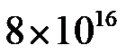
B. 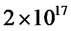
C. 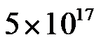
D. 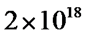
【答案】D
【解析】
【分析】用移动小数点的方法确定a值，根据整数位数减一原则确定n值，最后写成
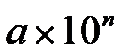
的形式即可．本题考查了科学记数法表示大数，熟练掌握把小数点点在左边第一个非零数字的后面确定a，运用整数位数减去1确定n值是解题的关键．【详解】
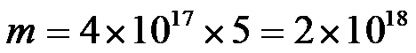
，故选D．
7. 下面是“作一个角使其等于
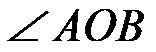
”的尺规作图方法.（1）如图，以点 圆心，任意长为半径画弧，分别交 圆心，任意长为半径画弧，分别交 ， ， 于点 于点 ， ， ； ； （2）作射线 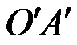 ，以点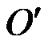 为圆心， 长为半径画弧，交于点 长为半径画弧，交于点 ；以点为圆心，长为半径画弧，两弧交于点； ；以点为圆心，长为半径画弧，两弧交于点；（3）过点作射线 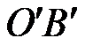 ，则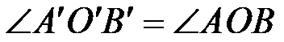 .
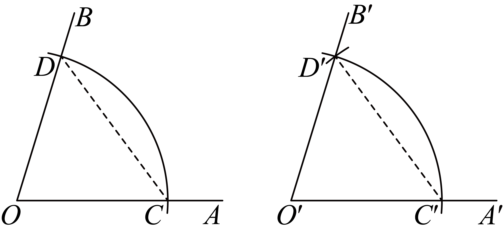 |
上述方法通过判定
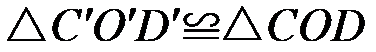
得到，其中判定的依据是（ ）A. 三边分别相等的两个三角形全等
B. 两边及其夹角分别相等的两个三角形全等
C. 两角及其夹边分别相等的两个三角形全等
D. 两角分别相等且其中一组等角的对边相等的两个三角形全等
【答案】A
【解析】
【分析】根据基本作图中，同圆半径相等，判定三角形全等的依据是边边边原理，解答即可.
本题考查了作一个角等于已知角的基本作图，熟练掌握作图的依据是边边边原理是解题的关键.
【详解】根据基本作图中，同圆半径相等，判定三角形全等的依据是边边边原理，
故选A.
8. 如图，在菱形中，
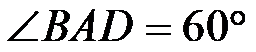
，为对角线的交点.将菱形绕点逆时针旋转 得到菱形
得到菱形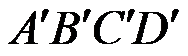
，两个菱形的公共点为 ，
， ，
，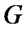
， .对八边形给出下面四个结论：
.对八边形给出下面四个结论：①该八边形各边长都相等；
②该八边形各内角都相等；
③点到该八边形各顶点的距离都相等；
④点到该八边形各边所在直线的距离都相等。
上述结论中，所有正确结论的序号是（ ）
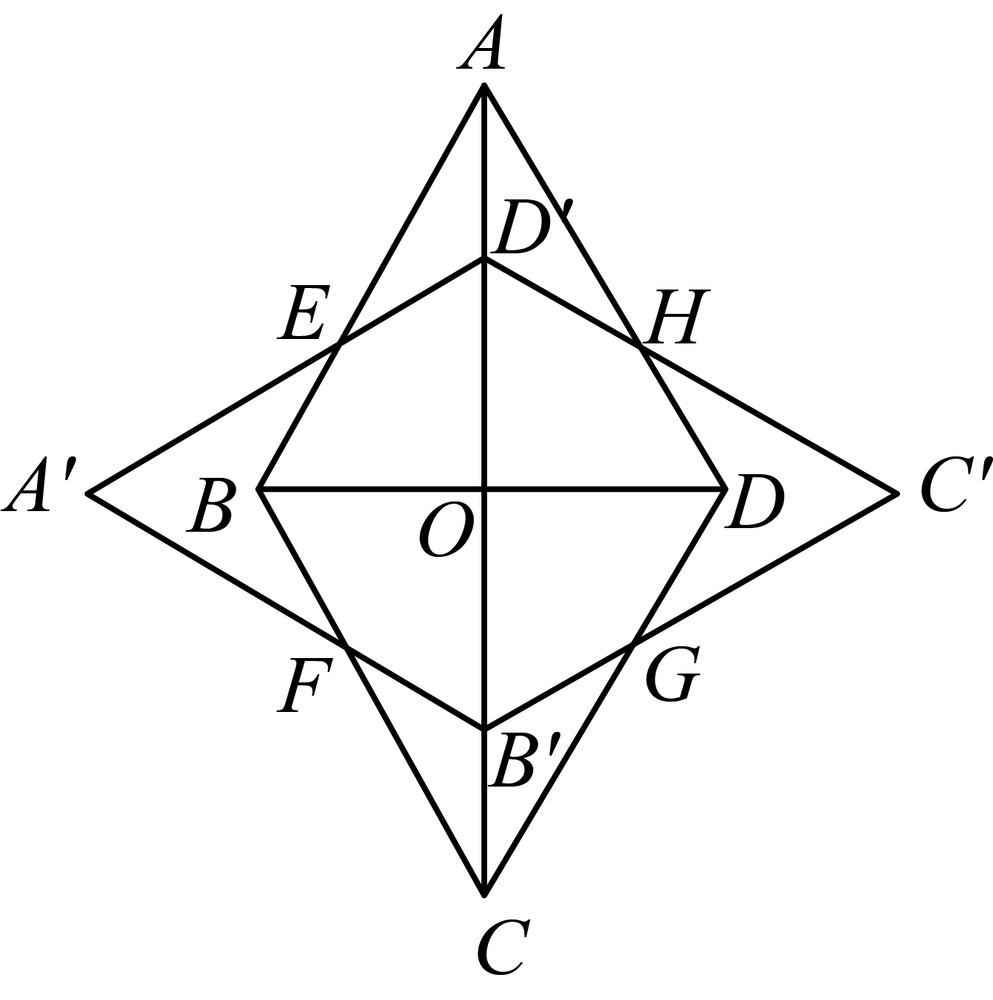
A. ①③B. ①④C. ②③D. ②④
【答案】B
【解析】
【分析】根据菱形，，则
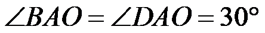
，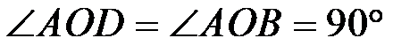
，结合菱形绕点逆时针旋转得到菱形，得到点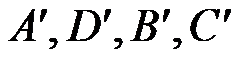
一定在对角线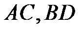
上，且，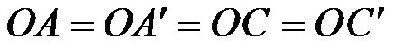
，继而得到，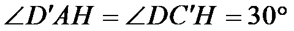
，结合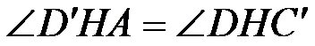
，继而得到，可证，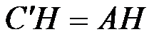
，同理可证，根据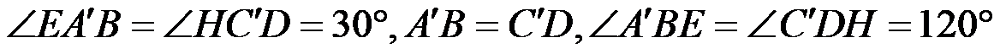
，可证，继而得到，继而得到，可以判定该八边形各边长都相等，故①正确；根据角的平分线的性质定理，得点到该八边形各边所在直线的距离都相等，可以判定④正确；根据题意，得
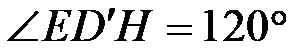
，结合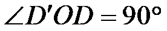
，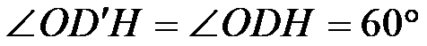
，得到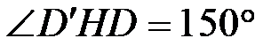
，可判定②该八边形各内角不相等；判定②错误，根据，可证，继而得到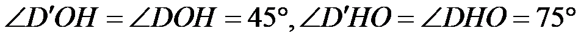
，故，可判定点到该八边形各顶点的距离都相等错误即③错误，解答即可.本题考查了旋转的性质，菱形的性质，三角形全等判定和性质，角的平分线性质定理，熟练掌握旋转的性质，菱形的性质，三角形全等判定和性质是解题的关键.
【详解】向两方分别延长 ，连接，
，连接，
根据菱形，，则，，
∵菱形绕点逆时针旋转得到菱形，
∴点一定在对角线上，且，，
∴，，
∵，
∴，
∴，，同理可证，
∵，
∴，
∴，
∴，
∴该八边形各边长都相等，
故①正确；
根据角的平分线的性质定理，得点到该八边形各边所在直线的距离都相等，
∴④正确；
根据题意，得，
∵，，
∴，
∴该八边形各内角不相等；
∴②错误，
根据，
∴，
∴，
故，
∴点到该八边形各顶点的距离都相等错误
∴③错误，
故选B．
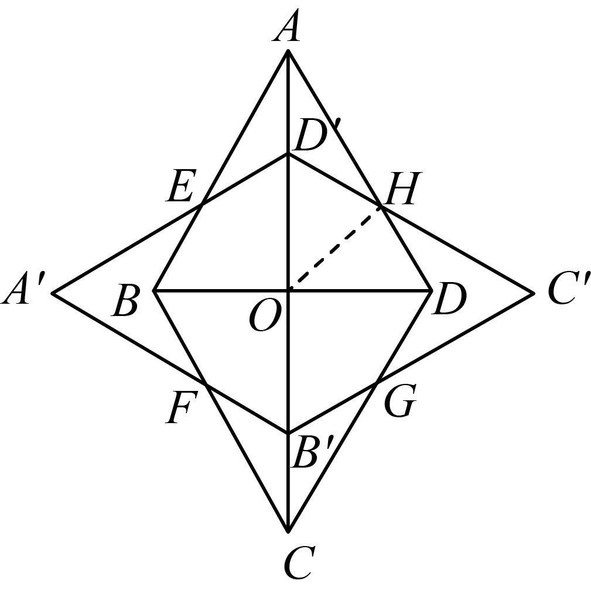
第二部分 非选择题
二、填空题（共16分，每题2分）
9. 若
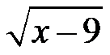
在实数范围内有意义，则实数的取值范围是_________．【答案】
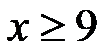
【解析】
【分析】根据二次根式有意义的条件，即可求解．
【详解】解：根据题意得
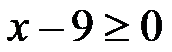
，解得：．
故答案为：
【点睛】本题主要考查了二次根式有意义的条件，熟练掌握二次根式的被开方数为非负数是解题的关键．
10. 分解因式：
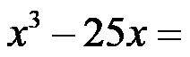
___________.【答案】
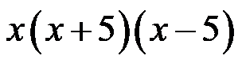
【解析】
【分析】先提取公因式，再套用公式分解即可．
本题考查了因式分解，熟练掌握先提取公因式，再套用公式分解是解题的关键．
【详解】
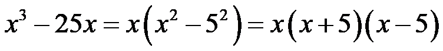
．故答案为：
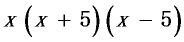
．11. 方程
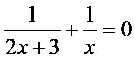
的解为___________.【答案】
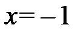
【解析】
【分析】本题考查了解分式方程，熟练掌握解分式方程的步骤是解题的关键．
先去分母，转化为解一元一次方程，注意要检验是否有增根．
【详解】解：
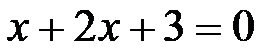
，解得：，
经检验：是原方程的解，
所以，原方程的解为，
故答案为：．
12. 在平面直角坐标系 中，若函数
中，若函数
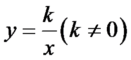
的图象经过点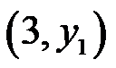
和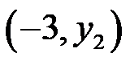
，则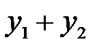
的值是___________.【答案】0
【解析】
【分析】本题考查了反比例函数图像点的坐标特征，已知自变量求函数值，熟练掌握知识点是解题的关键．
将点和代入，求得
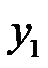
和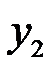
，再相加即可．【详解】解：∵函数的图象经过点和，
∴有
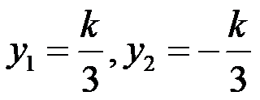
，∴，
故答案为：0．
13. 某厂加工了200个工件，质检员从中随机抽取10个工件检测了它们的质量（单位：g），得到的数据如下：
50.03 49.98 50.00 49.99 50.02
49.99 50.01 49.97 50.00 50.02
当一个工件的质量（单位：g）满足时，评定该工件为一等品.根据以上数据，估计这200个工件中一等品的个数是___________.
【答案】160
【解析】
【分析】本题考查了用样本估计总体，熟练掌握知识点是解题的关键．
先计算出10个工件中为一等品的频率，再乘以总数200即可求解．
【详解】解：10个工件中为一等品的有49.98，50.00，49.99，50.02，49.99，50.01，50.00，50.02这8个，
∴这200个工件中一等品的个数为个，
故答案为：160．
14. 如图， 的直径平分弦（不是直径）.若，则___________
的直径平分弦（不是直径）.若，则___________
【答案】55
【解析】
【分析】本题考查了垂径定理的推论，圆周角定理，直角三角形的性质，熟练掌握知识点是解题的关键．
先由垂径定理得到，由得到，故．
【详解】解：∵直径平分弦，
∴，
∵，
∴，
∴，
故答案为：．
15. 如图，在正方形中，点在上，于点，于点．若，，则 面积为___________．
面积为___________．
【答案】
【解析】
【分析】根据正方形的性质，得，，得到，结合，得到,，，求得的长，解答即可.
本题考查了正方形的性质，解直角三角形的相关计算，熟练掌握解直角三角形的相关计算是解题的关键.
【详解】解：根据正方形的性质，得，，
∴，
∵，
∴,
，
，
∴，
∴，
∴，
∴的面积为；
故答案为：．
16. 联欢会有A，B，C，D四个节目需要彩排.所有演员到场后节目彩排开始。一个节目彩排完毕，下一个节目彩排立即开始.每个节目的演员人数和彩排时长（单位：min）如下：
节目 | A | B | C | D |
演员人数 | 10 | 2 | 10 | 1 |
彩排时长 | 30 | 10 | 20 | 10 |
已知每位演员只参演一个节目.一位演员的候场时间是指从第一个彩排的节目彩排开始到这位演员参演的节目彩排开始的时间间隔（不考虑换场时间等其他因素）。
若节目按“”的先后顺序彩排，则节目D的演员的候场时间为____________min；
若使这23位演员的候场时间之和最小，则节目应按___________的先后顺序彩排
【答案】 ①. 60 ②.
【解析】
【分析】本题考查了有理数的混合运算，正确理解题意，熟练计算是解题的关键．
①节目D的演员的候场时间为；②先确定C在A的前面，B在D前面，然后分类讨论计算出每一种情况下，所有演员候场时间，比较即可．
【详解】解：①节目D的演员的候场时间为，
故答案为：60；
②由题意得节目A和C演员人数一样，彩排时长不一样，那么时长长的节目应该放在后面，那么C在A的前面，B和D彩排时长一样，人数不一样，那么人数少的应该往后排，这样等待时长会短一些，那么B在D前面，
∴①按照顺序，则候场时间为：分钟；
②按照顺序，则候场时间为：分钟；
③按照顺序，则候场时间为：分钟；
④按照顺序，则候场时间为：分钟；
⑤按照顺序，则候场时间为：分钟；
⑥按照顺序，则候场时间为：分钟．
∴按照顺序彩排，候场时间之和最小，
故答案为：．
三、解答题（共68分，第17-19题每题5分，第20-21题每题6分，第22-23题每题5分，第24题6分，第25题5分，第26题6分，第27-28题每题7分）
解答应写出文字说明、演算步骤或证明过程.
17. 计算：
【答案】
【解析】
【分析】本题考查了实数的运算，特殊角的三角函数值，熟练掌握知识点是解题的关键．
依次根据零指数幂，算术平方根的定义，特殊角的三角函数值，绝对值的意义化简计算即可．
【详解】解：原式
．
18. 解不等式组：
【答案】
【解析】
【分析】先求出每一个不等式的解集，在根据不等式解集的取值方法“同大取大，同小取小，大小小大中间找，大大小小无解”的方法确定不等式组的解集．本题考查了一元一次不等式组的解法，熟练进行不等式求解是解题的关键．
【详解】∵
∴解不等式①，得，解不等式,②，得，
∴不等式组的解集为．
19. 已知，求代数式值.
【答案】3
【解析】
【分析】本题考查了分式的化简求值，熟练掌握知识点是解题的关键．
先利用完全平方公式和整式的加法，乘法对分母分子化简，再对化简得到，再整体代入求值即可．
【详解】解：原式
，
∵，
∴，
∴原式．
20. 如图，在四边形中，是的中点， ，
， 交于点，，.
交于点，，.
（1）求证：四边形为平行四边形；
（2）若，，，求 的长.
的长.
【答案】（1）见详解 （2）
【解析】
【分析】（1）根据三角形的中位线定理得到，而，即可求证；
（2）解求得，由三角形的中位线定理和平行四边形的性质得到，最后对运用勾股定理即可求解．
【小问1详解】
证明：∵是的中点，，
∴，
∵，
∴四边形为平行四边形；
【小问2详解】
解：∵，
∴，
在中，，，
∴，
∵是的中点，
∴，
∵四边形为平行四边形，
∴，
∴在中，由勾股定理得．
【点睛】本题考查了平行四边形的判定与性质，三角形的中位线定理，解直角三角形，勾股定理，熟练掌握知识点是解决本题的关键．
21. 为防治污染，保护和改善生态环境，自2023年7月1日起，我国全面实施汽车国六排放标准6b阶段（以下简称“标准”）.对某型号汽车，“标准”要求 类物质排放量不超过
类物质排放量不超过 ，，
，， 两类物质排放量之和不超过
两类物质排放量之和不超过 .已知该型号某汽车的，两类物质排放量之和原为
.已知该型号某汽车的，两类物质排放量之和原为 .经过一次技术改进，该汽车的类物质排放量降低了
.经过一次技术改进，该汽车的类物质排放量降低了 ，类物质排放量降低了
，类物质排放量降低了 ，，两类物质排放量之和为
，，两类物质排放量之和为 ，判断这次技术改进后该汽车的类物质排放量是否符合“标准”，并说明理由.
，判断这次技术改进后该汽车的类物质排放量是否符合“标准”，并说明理由.
【答案】符合，理由见详解
【解析】
【分析】本题考查了列一元一次方程解应用题，正确理解题意，找到等量关系是解题的关键．
设技术改进后该汽车的A类物质排放量为 ，则B类类物质排放量为
，则B类类物质排放量为 ，根据汽车的，两类物质排放量之和原为建立方程求解即可．
，根据汽车的，两类物质排放量之和原为建立方程求解即可．
【详解】解：设技术改进后该汽车的A类物质排放量为，则B类类物质排放量为，
由题意得： ，
，
解得： ，
，
∵ ，
，
∴这次技术改进后该汽车的类物质排放量是符合“标准”．
22. 在平面直角坐标系中，函数与的图象交于点.
（1）求，的值；
（2）当时，对于的每一个值，函数的值既大于函数的值，也大于函数的值，直接写出的取值范围.
【答案】（1）
（2）
【解析】
【分析】本题考查了待定系数法求函数解析式，一次函数图像平行的条件，利用数形结合的思想是解决本题的关键．
（1）将代入先求出k，再将和k的值代入即可求出b；
（2）根据数形结合思想解决，将问题转化为当时，对于的每一个值，直线的图像在直线和直线的上方，画出临界状态图像分析即可．
【小问1详解】
解：由题意得将代入得：，
解得：，
将，，代入函数中，
得：，
解得：，
∴；
【小问2详解】
解：∵，
∴两个一次函数的解析式分别为，
当时，对于的每一个值，函数的值既大于函数的值，也大于函数的值，
即当时，对于的每一个值，直线的图像在直线和直线的上方，则画出图象为：
由图象得：当直线与直线平行时符合题意或者当与x轴的夹角大于直线与直线平行时的夹角也符合题意，
∴当直线与直线平行时，，
∴当时，对于的每一个值，直线的图像在直线和直线的上方时，，
∴m的取值范围为．
23. 某学校举办的“青春飞扬”主题演讲比赛分为初赛和决赛两个阶段.
（1）初赛由名数师评委和名学生评委给每位选手打分（百分制）对评委给某位选手的打分进行整理、描述和分析.下面给出了部分信息.
.教师评委打分：
.学生评委打分的频数分布直方图如下（数据分6组：第1组，第2组，第3组，第4组，第5组，第6组）：
.评委打分的平均数、中位数、众数如下：
| 平均数 | 中位数 | 众数 |
教师评委 | | |
|
学生评委 | | | |
根据以上信息，回答下列问题：
①的值为___________，的值位于学生评委打分数据分组的第__________组；
②若去掉教师评委打分中的最高分和最低分，记其余8名教师评委打分的平均数为，则___________（填“”“”或“ ”）；
”）；
（2）决赛由5名专业评委给每位选手打分（百分制）.对每位选手，计算5名专业评委给其打分的平均数和方差.平均数较大的选手排序靠前，若平均数相同，则方差较小的选手排序靠前，5名专业评委给进入决赛的甲、乙、丙三位选手的打分如下：
若丙在甲、乙、丙三位选手中的排序居中，则这三位选手中排序最靠前的是____________，表中（为整数）的值为____________.
【答案】（1）①，；②
（2）甲，
【解析】
【分析】本题考查折线统计图，平均数、方差，理解平均数、方差的意义和计算方法是正确解答的前提．
（1）根据算术平均数以及中位数的定义解答即可；
（2）根据方差的定义和意义求解即可；
（3）根据题意得出，进而分别求得方差与平均数，分类讨论，求解即可．
【小问1详解】
①从教师评委打分的情况看，分出现的次数最多，故教师评委打分的众数为，
所以，
共有45名学生评委给每位选手打分，
所以学生评委给每位选手打分的中位数应当是第个，从频数分面直方图上看，可得学生评委给每位选手打分的中位数在第4组，
故答案为：，；
②去掉教师评委打分中的最高分和最低分，其余8名教师评委打分分别为：，，，，，，，，
，
故答案为：；
【小问2详解】
，
，
，
，
 丙在甲、乙、丙三位选手中的排序居中，
丙在甲、乙、丙三位选手中的排序居中，
依题意，当，则
解得：
当时，
此时
∵，则乙在甲、乙、丙三位选手中的排序居中，不合题意，
当时，
此时
∵，则丙在甲、乙、丙三位选手中的排序居中，这三位选手中排序最靠前的是甲
故答案：甲，．
24. 如图，是的直径，点，在上，平分.
（1）求证：；
（2）延长交于点，连接交于点，过点作的切线交 的延长线于点
的延长线于点 .若，，求半径的长.
.若，，求半径的长.
【答案】（1）见解析 （2）
【解析】
【分析】（1）根据题意，得，结合，得到，继而得到，根据平分，得到，继而得到，可证；
（2）不妨设，则，求得，证明，，求得，取的中点M，连接 ，则，求得，，结合切线性质，得到，解答即可.
，则，求得，，结合切线性质，得到，解答即可.
【小问1详解】
根据题意，得，
∵，
∴，
∴，
∵平分，
∴，
∴，
∴；
【小问2详解】
∵，，
不妨设，则，
∴，
∵，
∴，，
∴，
∴，
解得，
取的中点M，连接，
则
∵，
∴，
∴，
∴，
∵是的切线，
∴，
∴，
解得，
故半径的长为.
【点睛】本题考查了圆的性质，等腰三角形的性质，平行线的判定，三角形相似的判定和性质，切线的性质，解直角三角形的相关计算，等量代换思想，熟练掌握三角形相似的判定和性质，切线的性质，解直角三角形的相关计算是解题的关键.
25. 小云有一个圆柱形水杯（记为1号杯），在科技活动中，小云用所学数学知识和人工智能软件设计了一个新水杯，并将其制作出来，新水杯（记为2号杯）示意图如下，
当1号杯和2号杯中都有mL水时，小云分别记录了1号杯的水面高度（单位：cm）和2号杯的水面高度（单位：cm），部分数据如下：
/mL | 0 | 40 | 100 | 200 | 300 | 400 | 500 |
/cm | 0 |
| 2.5 | 5.0 | 7.5 | 10.0 | 12.5 |
/cm | 0 | 2.8 | 4.8 | 7.2 | 8.9 | 10.5 | 11.8 |
（1）补全表格（结果保留小数点后一位）；
（2）通过分析数据，发现可以用函数刻画与，与之间的关系.在给出的平面直角坐标系中，画出这两个函数的图象；
（3）根据以上数据与函数图象，解决下列问题：
①当1号杯和2号杯中都有320mL水时，2号杯的水面高度与1号杯的水面高度的差约为___________cm（结果保留小数点后一位）；
②在①的条件下，将2号杯中的一都分水倒入1号杯中，当两个水杯的水面高度相同时，其水面高度约为___________cm（结果保留小数点后一位）．
【答案】（1）1.0 （2）见详解
（3）1.2，8.5
【解析】
【分析】本题考查了函数的图像与性质，描点法画函数图像，求一次函数解析式，已知函数值求自变量，正确理解题意，熟练掌握知识点是解题的关键．
（1）设V与的函数关系式为：，由表格数据得：，则可求，代入即可求解；
（2）画与之间的关系图像时，描点，连线即可，画与的关系图像时，由于是正比例函数，故只需描出两点即可；
（3）①当时，，由图象可知高度差；②在左右两侧找到等距的体积所对应的高度相同，大致为．
【小问1详解】
解：由题意得，设V与的函数关系式为：，
由表格数据得：，
解得：，
∴，
∴当时，，
∴；
【小问2详解】
解：如图所示，即为所画图像，
【小问3详解】
解：①当时，，由图象可知高度差，
故答案为：1.2；
②由图象可知当两个水杯的水面高度相同时，估算高度约为，
故答案为：．
26. 在平面直角坐标系中，已知抛物线.
（1）当时，求抛物线的顶点坐标；
（2）已知 和
和 是抛物线上的两点.若对于，，都有
是抛物线上的两点.若对于，，都有 ，求的取值范围.
，求的取值范围.
【答案】（1）；
（2）或．
【解析】
【分析】（）把代入，转化成顶点式即可求解；
（）分 和两种情况，画出图形结合二次函数的性质解答即可求解；
和两种情况，画出图形结合二次函数的性质解答即可求解；
本题考查了求二次函数的顶点式，二次函数的性质，运用分类讨论和数形结合思想解答是解题的关键．
【小问1详解】
解：把代入得，，
∴抛物线的顶点坐标为；
【小问2详解】
解：分两种情况：
当时，如图，此时，
∴，
又∵，
∴；
当时，如图，此时，
解得，
又∵，
∴；
综上，当或，都有．
27. 已知，点，分别在射线，上，将线段绕点顺时针旋转 得到线段，过点作的垂线交射线于点.
得到线段，过点作的垂线交射线于点.
（1）如图1，当点在射线上时，求证：是 的中点；
的中点；
（2）如图2，当点在内部时，作，交射线于点，用等式表示线段 与
与 的数量关系，并证明。
的数量关系，并证明。
【答案】（1）见详解 （2），理由见详解
【解析】
【分析】（1）先根据等腰三角形的性质以及三角形内角和定理求得，则，故，再根据等角的余角相等即可得到，故，最后等量代换出，即点是的中点；
（2）在射线上取点H，使得，取的中点G，连接，可证明，则，，则，根据平行线的性质以及等腰三角形的性质得到，则，而，故可等量代换出．
【小问1详解】
证明：连接，
由题意得：，，
∴，
∵，
∴，
∴，
∴，
∵，
∴，
∴，
∴，
∴，
∴点是的中点；
【小问2详解】
解：，
在射线上取点H，使得，取的中点G，连接，
∵，
∴，
∴，
∴，
又∵，
∴，
∴，，
∴，
∵，
∴，，
∵是的中点，
∴，，
∴，
∴，
∴，
∴，
∵，
∴，
∴．
【点睛】本题考查了旋转的性质，全等三角形的判定与性质，三角形的内角和，外角定理，平行线的性质，直角三角形的性质，熟练掌握这些知识点，正确添加辅助线是解题的关键．
28. 在平面直角坐标系中，的半径为1，对于的弦和不在直线上的点，给出如下定义：若点关于直线的对称点在上或其内部，且 ，则称点是弦的“
，则称点是弦的“ 可及点”．
可及点”．

（1）如图，点 ，
， ．
．
①在点 ，
， ，
， 中，点___________是弦的“可及点”，其中
中，点___________是弦的“可及点”，其中 ____________；
____________；
②若点是弦的“可及点”，则点的横坐标的最大值为__________；
（2）已知是直线 上一点，且存在的弦
上一点，且存在的弦 ，使得点是弦的“
，使得点是弦的“ 可及点”．记点的横坐标为
可及点”．记点的横坐标为 ，直接写出的取值范围．
，直接写出的取值范围．
【答案】（1）①，45；②
（2）或
【解析】
【分析】（1）由相对运动理解，作出关于的对称圆，若点关于直线的对称点在上或其内部，且，则称点是弦的“可及点”，则点C应在的圆内或圆上，先求得，根据点与圆的位置关系的判断方法分别判断即可得出在上，故符合题意，根据圆周角定理即可求解；
②取中点为H，连接，可确定点D在以H为圆心，为半径的上方半圆上运动（不包括端点A、B），当点轴时，点D横坐标最大，可求，故点的横坐标的最大值为；
（2）反过来思考，由相对运动理解，作出关于的对称圆，故点P需要在的圆内或圆上，作出的外接圆，连接，则点P在以为圆心，为半径的上运动（不包括端点M、N），可求，随着的增大，会越来越靠近，当点与点重合时，点P在上，即为临界状态，此时最大，，由，故当最大，时，此时为等边三角形，此时，故当， 的最大值为2，设，则，解得：，可求直线与交于点，，故t的取值范围是或．
的最大值为2，设，则，解得：，可求直线与交于点，，故t的取值范围是或．
【小问1详解】
解：①：反过来思考，由相对运动理解，作出关于的对称圆，
∵若点关于直线的对称点在上或其内部，且，则称点是弦的“可及点”，
∴点C应在的圆内或圆上，
∵点，，
∴，
而，
∴,
由对称得：，
∴为等腰直角三角形，
∴,
设半径为，
则,故在外，不符合题意；
，故在上，符合题意；
，故在外，不符合题意，
∴点是弦的“可及点”，
可知三点共线，
∵ ，
，
∴，
故答案为：，45；
②取中点为H，连接，
∵则，
∴，
∴点D在以H为圆心，为半径的上方半圆上运动（不包括端点A、B），
∴当点轴时，点D横坐标最大，
∵，，
∴，
∴，
∵点，，
∴，
∴此时，
∴点的横坐标的最大值为，
故答案为：；
【小问2详解】
解：反过来思考，由相对运动理解，作出关于的对称圆，
∵若点关于直线的对称点在上或其内部，且，则称点是弦的“可及点”，
∴点C应在的圆内或圆上，
故点P需要在的圆内或圆上，
作出的外接圆，连接，
∴点P在以为圆心，为半径的上运动（不包括端点M、N），
∴，
∴，
由对称得点在的垂直平分线上，
∵的外接圆为，
∴点也在的垂直平分线上，记与交于点Q，
∴，
∴，
随着的增大，会越来越靠近，当点与点重合时，点P在上，即为临界状态，此时最大，，
连接，
∵，
∴当最大,时，此时为等边三角形，
由上述过程知
∴，
∴当，的最大值为2，
设，则，
解得：，
而记直线与交于，与y轴交于点K，过点S作轴，
当，当时，，
解得 ，
，
∴与x轴交于点，
∴，而
∴为等边三角形，
∴，
∴，
∴，
∴t的取值范围是或．
【点睛】本题考查了新定义，轴对称变换，点与圆的位置关系，圆周角定理，解直角三角形，一次函数与坐标轴的交点问题，已知两点求距离等知识点，正确添加辅助线，找到临界状态情况是解题的关键．